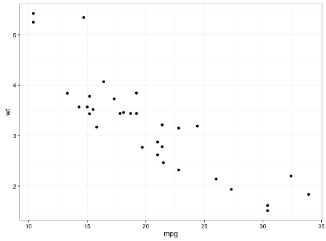
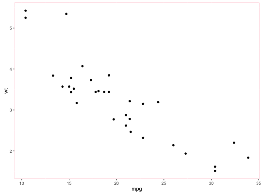
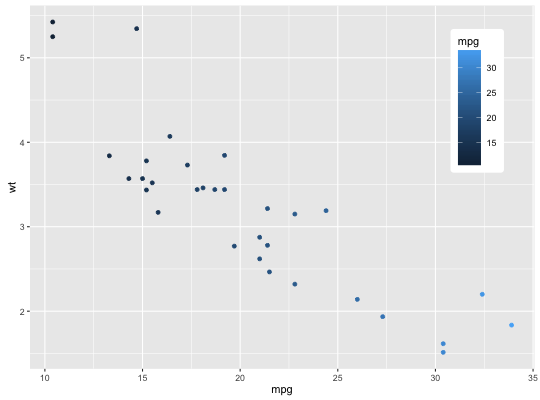

Get, set and update themes.
Usage
theme_update(...)theme_get()theme_set(new)
Arguments
- ...
- named list of theme settings
- new
- new theme (a list of theme elements)
Description
Use theme_update to modify a small number of elements of the current
theme or use theme_set to completely override it.
Examples
p <- ggplot(mtcars, aes(mpg, wt)) + geom_point() p
old <- theme_set(theme_bw()) p
theme_set(old) p
old <- theme_update(panel.background = element_rect(colour = "pink")) p
theme_set(old) theme_get()List of 42 $ line :List of 4 ..$ colour : chr "black" ..$ size : num 0.5 ..$ linetype: num 1 ..$ lineend : chr "butt" ..- attr(*, "class")= chr [1:2] "element_line" "element" $ rect :List of 4 ..$ fill : chr "white" ..$ colour : chr "black" ..$ size : num 0.5 ..$ linetype: num 1 ..- attr(*, "class")= chr [1:2] "element_rect" "element" $ text :List of 9 ..$ family : chr "" ..$ face : chr "plain" ..$ colour : chr "black" ..$ size : num 11 ..$ hjust : num 0.5 ..$ vjust : num 0.5 ..$ angle : num 0 ..$ lineheight: num 0.9 ..$ margin :Classes 'margin', 'unit' atomic [1:4] 0 0 0 0 .. .. ..- attr(*, "unit")= chr "pt" .. .. ..- attr(*, "valid.unit")= int 8 ..- attr(*, "class")= chr [1:2] "element_text" "element" $ axis.line : list() ..- attr(*, "class")= chr [1:2] "element_blank" "element" $ axis.text :List of 9 ..$ family : NULL ..$ face : NULL ..$ colour : chr "grey30" ..$ size :Class 'rel' num 0.8 ..$ hjust : NULL ..$ vjust : NULL ..$ angle : NULL ..$ lineheight: NULL ..$ margin : NULL ..- attr(*, "class")= chr [1:2] "element_text" "element" $ axis.text.x :List of 9 ..$ family : NULL ..$ face : NULL ..$ colour : NULL ..$ size : NULL ..$ hjust : NULL ..$ vjust : num 1 ..$ angle : NULL ..$ lineheight: NULL ..$ margin :Classes 'margin', 'unit' atomic [1:4] 2.2 0 0 0 .. .. ..- attr(*, "unit")= chr "pt" .. .. ..- attr(*, "valid.unit")= int 8 ..- attr(*, "class")= chr [1:2] "element_text" "element" $ axis.text.y :List of 9 ..$ family : NULL ..$ face : NULL ..$ colour : NULL ..$ size : NULL ..$ hjust : num 1 ..$ vjust : NULL ..$ angle : NULL ..$ lineheight: NULL ..$ margin :Classes 'margin', 'unit' atomic [1:4] 0 2.2 0 0 .. .. ..- attr(*, "unit")= chr "pt" .. .. ..- attr(*, "valid.unit")= int 8 ..- attr(*, "class")= chr [1:2] "element_text" "element" $ axis.ticks :List of 4 ..$ colour : chr "grey20" ..$ size : NULL ..$ linetype: NULL ..$ lineend : NULL ..- attr(*, "class")= chr [1:2] "element_line" "element" $ axis.ticks.length :Class 'unit' atomic [1:1] 2.75 .. ..- attr(*, "unit")= chr "pt" .. ..- attr(*, "valid.unit")= int 8 $ axis.title.x :List of 9 ..$ family : NULL ..$ face : NULL ..$ colour : NULL ..$ size : NULL ..$ hjust : NULL ..$ vjust : NULL ..$ angle : NULL ..$ lineheight: NULL ..$ margin :Classes 'margin', 'unit' atomic [1:4] 4.4 0 2.2 0 .. .. ..- attr(*, "unit")= chr "pt" .. .. ..- attr(*, "valid.unit")= int 8 ..- attr(*, "class")= chr [1:2] "element_text" "element" $ axis.title.y :List of 9 ..$ family : NULL ..$ face : NULL ..$ colour : NULL ..$ size : NULL ..$ hjust : NULL ..$ vjust : NULL ..$ angle : num 90 ..$ lineheight: NULL ..$ margin :Classes 'margin', 'unit' atomic [1:4] 0 4.4 0 2.2 .. .. ..- attr(*, "unit")= chr "pt" .. .. ..- attr(*, "valid.unit")= int 8 ..- attr(*, "class")= chr [1:2] "element_text" "element" $ legend.background :List of 4 ..$ fill : NULL ..$ colour : logi NA ..$ size : NULL ..$ linetype: NULL ..- attr(*, "class")= chr [1:2] "element_rect" "element" $ legend.margin :Class 'unit' atomic [1:1] 0.2 .. ..- attr(*, "unit")= chr "cm" .. ..- attr(*, "valid.unit")= int 1 $ legend.key :List of 4 ..$ fill : chr "grey95" ..$ colour : chr "white" ..$ size : NULL ..$ linetype: NULL ..- attr(*, "class")= chr [1:2] "element_rect" "element" $ legend.key.size :Class 'unit' atomic [1:1] 1.2 .. ..- attr(*, "unit")= chr "lines" .. ..- attr(*, "valid.unit")= int 3 $ legend.key.height : NULL $ legend.key.width : NULL $ legend.text :List of 9 ..$ family : NULL ..$ face : NULL ..$ colour : NULL ..$ size :Class 'rel' num 0.8 ..$ hjust : NULL ..$ vjust : NULL ..$ angle : NULL ..$ lineheight: NULL ..$ margin : NULL ..- attr(*, "class")= chr [1:2] "element_text" "element" $ legend.text.align : NULL $ legend.title :List of 9 ..$ family : NULL ..$ face : NULL ..$ colour : NULL ..$ size : NULL ..$ hjust : num 0 ..$ vjust : NULL ..$ angle : NULL ..$ lineheight: NULL ..$ margin : NULL ..- attr(*, "class")= chr [1:2] "element_text" "element" $ legend.title.align : NULL $ legend.position : chr "right" $ legend.direction : NULL $ legend.justification : chr "center" $ legend.box : NULL $ panel.background :List of 4 ..$ fill : chr "grey92" ..$ colour : logi NA ..$ size : NULL ..$ linetype: NULL ..- attr(*, "class")= chr [1:2] "element_rect" "element" $ panel.border : list() ..- attr(*, "class")= chr [1:2] "element_blank" "element" $ panel.grid.major :List of 4 ..$ colour : chr "white" ..$ size : NULL ..$ linetype: NULL ..$ lineend : NULL ..- attr(*, "class")= chr [1:2] "element_line" "element" $ panel.grid.minor :List of 4 ..$ colour : chr "white" ..$ size : num 0.25 ..$ linetype: NULL ..$ lineend : NULL ..- attr(*, "class")= chr [1:2] "element_line" "element" $ panel.margin :Class 'unit' atomic [1:1] 5.5 .. ..- attr(*, "unit")= chr "pt" .. ..- attr(*, "valid.unit")= int 8 $ panel.margin.x : NULL $ panel.margin.y : NULL $ panel.ontop : logi FALSE $ strip.background :List of 4 ..$ fill : chr "grey85" ..$ colour : logi NA ..$ size : NULL ..$ linetype: NULL ..- attr(*, "class")= chr [1:2] "element_rect" "element" $ strip.text :List of 9 ..$ family : NULL ..$ face : NULL ..$ colour : chr "grey10" ..$ size :Class 'rel' num 0.8 ..$ hjust : NULL ..$ vjust : NULL ..$ angle : NULL ..$ lineheight: NULL ..$ margin : NULL ..- attr(*, "class")= chr [1:2] "element_text" "element" $ strip.text.x :List of 9 ..$ family : NULL ..$ face : NULL ..$ colour : NULL ..$ size : NULL ..$ hjust : NULL ..$ vjust : NULL ..$ angle : NULL ..$ lineheight: NULL ..$ margin :Classes 'margin', 'unit' atomic [1:4] 5.5 0 5.5 0 .. .. ..- attr(*, "unit")= chr "pt" .. .. ..- attr(*, "valid.unit")= int 8 ..- attr(*, "class")= chr [1:2] "element_text" "element" $ strip.text.y :List of 9 ..$ family : NULL ..$ face : NULL ..$ colour : NULL ..$ size : NULL ..$ hjust : NULL ..$ vjust : NULL ..$ angle : num -90 ..$ lineheight: NULL ..$ margin :Classes 'margin', 'unit' atomic [1:4] 0 5.5 0 5.5 .. .. ..- attr(*, "unit")= chr "pt" .. .. ..- attr(*, "valid.unit")= int 8 ..- attr(*, "class")= chr [1:2] "element_text" "element" $ strip.switch.pad.grid:Class 'unit' atomic [1:1] 0.1 .. ..- attr(*, "unit")= chr "cm" .. ..- attr(*, "valid.unit")= int 1 $ strip.switch.pad.wrap:Class 'unit' atomic [1:1] 0.1 .. ..- attr(*, "unit")= chr "cm" .. ..- attr(*, "valid.unit")= int 1 $ plot.background :List of 4 ..$ fill : NULL ..$ colour : chr "white" ..$ size : NULL ..$ linetype: NULL ..- attr(*, "class")= chr [1:2] "element_rect" "element" $ plot.title :List of 9 ..$ family : NULL ..$ face : NULL ..$ colour : NULL ..$ size :Class 'rel' num 1.2 ..$ hjust : NULL ..$ vjust : NULL ..$ angle : NULL ..$ lineheight: NULL ..$ margin :Classes 'margin', 'unit' atomic [1:4] 0 0 6.6 0 .. .. ..- attr(*, "unit")= chr "pt" .. .. ..- attr(*, "valid.unit")= int 8 ..- attr(*, "class")= chr [1:2] "element_text" "element" $ plot.margin :Classes 'margin', 'unit' atomic [1:4] 5.5 5.5 5.5 5.5 .. ..- attr(*, "unit")= chr "pt" .. ..- attr(*, "valid.unit")= int 8 - attr(*, "class")= chr [1:2] "theme" "gg" - attr(*, "complete")= logi TRUE - attr(*, "validate")= logi TRUEggplot(mtcars, aes(mpg, wt)) + geom_point(aes(color = mpg)) + theme(legend.position = c(0.95, 0.95), legend.justification = c(1, 1))
last_plot() + theme(legend.background = element_rect(fill = "white", colour = "white", size = 3))